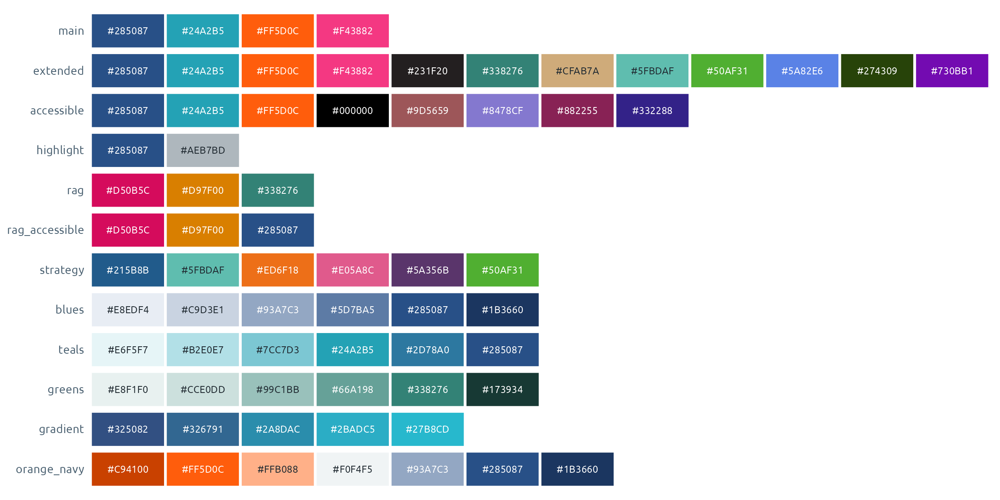
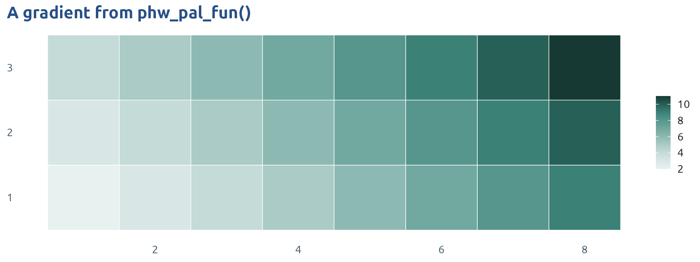
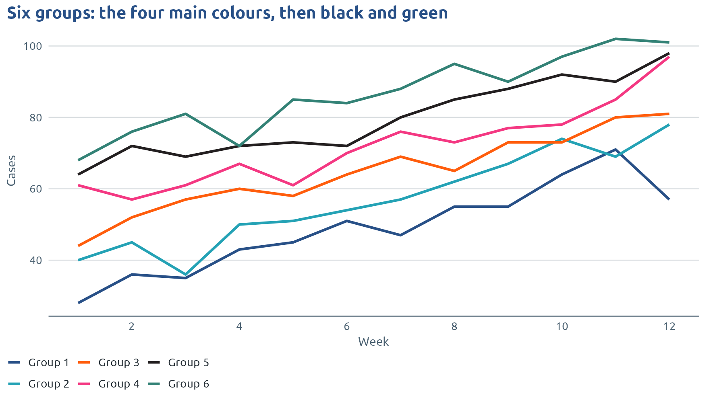
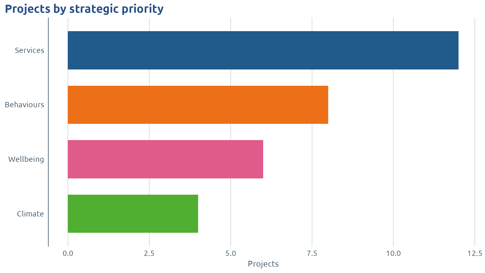
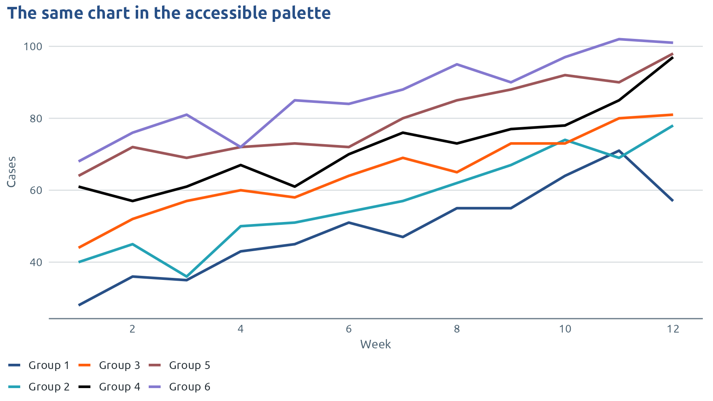
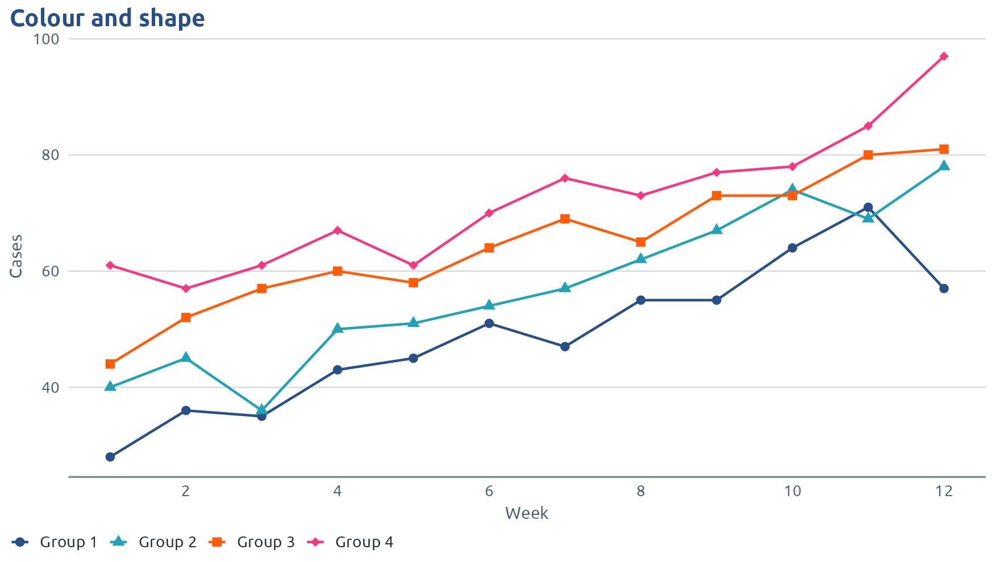
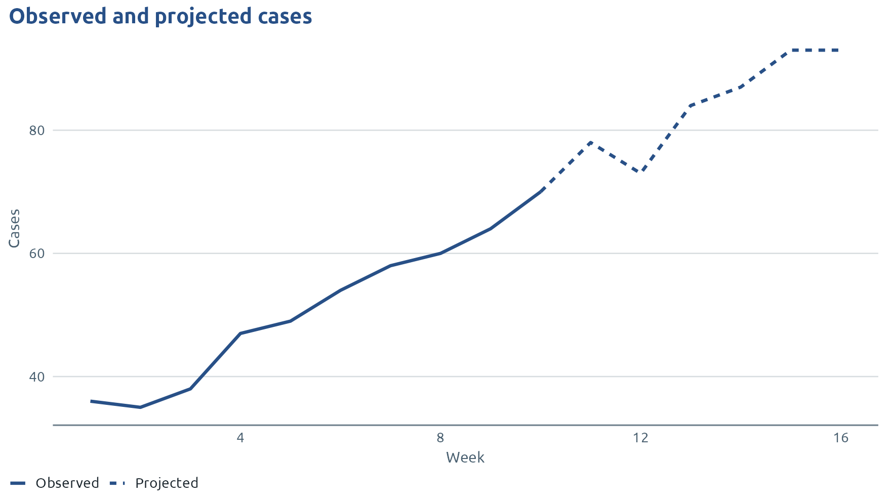
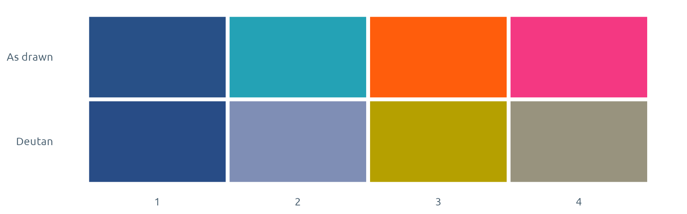
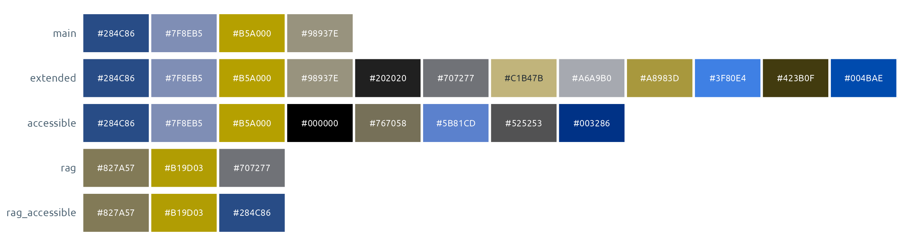

This page shows how phwstyle chooses colours and how to check them. All data on it is made up.
The palettes
show_phw_palettes() draws every palette with its
colours. Give a name to the palette argument of any
phwstyle function, for example
scale_fill_phw_d(palette = "strategy") or
phw_flextable_heat(palette = "greens").

| Palette | Colours | Use it for |
|---|---|---|
main |
4: navy, teal, orange, pink | Groups. The default |
extended |
12: the four of main, then black, green and gold, then
mint and bright green, then a blue, a dark green and a violet |
Charts with more than four groups. Used automatically |
accessible |
8, starting navy, teal, orange | Groups, when every reader must tell them apart. Only used when you switch it on |
strategy |
6, one for each strategic priority in the PHW Long-Term Strategy 2023 to 2035 | Work reported by strategic priority |
highlight |
2: navy and light grey | One group picked out from the rest |
rag, rag_accessible
|
3: red, amber and green (RAG) status colours.
rag_accessible has navy for “good” instead of green |
Status against a target |
blues, teals, greens,
gradient
|
Light to dark | Numbers: heat tables, maps, continuous colour scales |
orange_navy |
Orange through pale grey to navy | Numbers above and below a midpoint, such as change from last year |
phw_pal() returns the colours, and
phw_colours holds every brand colour by name.
phw_col() picks colours by name.
phw_default_palette() returns the palette that charts,
tables and widgets use when you don’t name one.
phw_pal() # navy, teal, orange, pink
#> [1] "#285087" "#24A2B5" "#FF5D0C" "#F43882"
phw_pal(6) # more than four groups carry on into "extended"
#> [1] "#285087" "#24A2B5" "#FF5D0C" "#F43882" "#231F20" "#338276"
phw_pal(5, "greens") # sequential palettes give any number of colours
#> [1] "#E7F1F0" "#BFD8D4" "#7FB0A9" "#40897E" "#173933"
phw_col("navy", "teal")
#> navy teal
#> "#285087" "#24A2B5"
phw_default_palette()
#> [1] "main"phw_pal_fun() returns a function that takes a number and
returns that many colours. Use it where another package asks for a
palette function, or for colours in a ggplot2 gradient
scale.
greens <- phw_pal_fun("greens")
greens(5)
#> [1] "#E7F1F0" "#BFD8D4" "#7FB0A9" "#40897E" "#173933"
tidyr::expand_grid(x = 1:8, y = 1:3) |>
mutate(value = x + y) |>
ggplot(aes(x, y, fill = value)) +
geom_tile(colour = "white") +
scale_fill_gradientn(colours = greens(9)) +
labs(title = "A gradient from phw_pal_fun()", x = NULL, y = NULL) +
theme_phw(grid = "none", legend = "right")
Every palette argument also takes your own vector of
colours, e.g.
scale_colour_phw_d(palette = c("#285087", "#FF5D0C")).
How groups get their colours
Charts, tables and widgets colour groups from one palette. Up to four
groups use main. More than four carry on into
extended, so a chart with six groups starts with the same
colours as a chart with four, and charts in the same report match.
weekly <- tidyr::expand_grid(week = 1:12, group = paste("Group", 1:6)) |>
mutate(cases = round(20 + 3 * week + 8 * as.integer(factor(group)) + rnorm(n(), 0, 4)))
ggplot(weekly, aes(week, cases, colour = group)) +
geom_line(linewidth = 1) +
scale_x_continuous(breaks = seq(2, 12, 2)) +
labs(title = "Six groups: the four main colours, then black and green",
x = "Week", y = "Cases")
Twelve colours is the limit of extended, and a chart is
hard to read by colour alone well before that. With many groups, use
facets, label the lines directly, or pick out one group with
palette = "highlight".
Groups called “Other”, “Unknown”, “Not known” and similar are drawn
in grey, so they don’t compete with real groups. This happens when you
add a PHW scale such as scale_fill_phw_d() or use a colour
key. A plot left on the default ggplot2 colours gives “Unknown” an
ordinary colour.
Colours with a fixed meaning
When a colour should always mean the same thing, pin it with
values. For example, to colour by strategic priority, match
your groups to the names in the strategy palette:
phw_palettes$strategy
#> services system behaviours wellbeing determinants climate
#> "#215B8B" "#5FBDAF" "#ED6F18" "#E05A8C" "#5A356B" "#50AF31"
priorities <- tibble(
priority = c("Services", "Behaviours", "Wellbeing", "Climate"),
projects = c(12, 8, 6, 4)
)
ggplot(priorities, aes(projects, reorder(priority, projects), fill = priority)) +
geom_col(width = 0.7) +
scale_fill_phw_d(values = c(Services = phw_palettes$strategy[["services"]],
Behaviours = phw_palettes$strategy[["behaviours"]],
Wellbeing = phw_palettes$strategy[["wellbeing"]],
Climate = phw_palettes$strategy[["climate"]]),
guide = "none") +
labs(title = "Projects by strategic priority", x = "Projects", y = NULL) +
theme_phw(grid = "x")
Colours that stay with their groups
By default, groups take colours in the order they appear. Add a group (a new age band, say) and every colour after it moves. A colour key fixes each group’s colour instead: new groups get the next free colour and existing ones never move.
ages <- c("0-14", "15-44", "45-64", "65+")
phw_colour_key(ages, "age_group")
#> 0-14 15-44 45-64 65+
#> "#285087" "#24A2B5" "#FF5D0C" "#F43882"
phw_colour_key(c("Under 1", ages, "Unknown"), "age_group")
#> Under 1 0-14 15-44 45-64 65+ Unknown
#> "#231F20" "#285087" "#24A2B5" "#FF5D0C" "#F43882" "#768692"phw_key() returns one stored key and
phw_keys() lists every key in the session as a data
frame:
phw_key("age_group")
#> 0-14 15-44 45-64 65+ Unknown Under 1
#> "#285087" "#24A2B5" "#FF5D0C" "#F43882" "#768692" "#231F20"
phw_keys()
#> key level colour
#> 1 age_group 0-14 #285087
#> 2 age_group 15-44 #24A2B5
#> 3 age_group 45-64 #FF5D0C
#> 4 age_group 65+ #F43882
#> 5 age_group Unknown #768692
#> 6 age_group Under 1 #231F20Use the same key name everywhere the groups appear:
| Where | How |
|---|---|
| ggplot2 |
scale_fill_phw_d(key = "age_group") or
scale_colour_phw_d(key = "age_group")
|
| flextable | phw_flextable_groups(ft, age_group, key = "age_group") |
| reactable | phw_reactable(data, group_col = age_group, key = "age_group") |
| leaflet | phw_leaflet_polygons(map, data, fill = age_group, key = "age_group") |
| plotly | plot_ly(..., colors = phw_colour_key(data$age_group, "age_group")) |
Keys last for the R session. To keep them between sessions and reports, save them to a file in your project, at the top of each script or in the setup chunk:
phw_key_file("phw-colours.csv")The file is plain text (key,level,colour) that you can
edit by hand and keep with the project.
phw_key_set() pins the colour of one or more groups by
hand. Give it named colours:
phw_key_set("age_group", c("65+" = unname(phw_col("orange"))))
phw_key("age_group")
#> 0-14 15-44 45-64 65+ Unknown Under 1
#> "#285087" "#24A2B5" "#FF5D0C" "#FF5D0C" "#768692" "#231F20"phw_key_recolour() moves a whole key to another palette,
keeping the group order. Do this on purpose, because every report that
uses the key changes colour with it.
phw_key_recolour("age_group", "accessible")
phw_key("age_group")
#> 0-14 15-44 45-64 65+ Unknown Under 1
#> "#285087" "#24A2B5" "#FF5D0C" "#000000" "#768692" "#9D5659"phw_key_reset() forgets a key, or every key if you give
no name.
phw_key_reset("age_group")
nrow(phw_keys())
#> [1] 0Colour-blind safe colours
About 1 in 12 men and 1 in 200 women see some colours differently,
most often reds and greens. The main palette stays distinct
for the three common types of colour blindness. The extra colours of
extended stay apart for the two red-green types.
The accessible palette stays distinct for all three
types with up to eight groups, and every colour in it has at least 3:1
contrast on white. It is not used unless you switch it on. When you do,
every chart, table and widget uses it, whatever the number of groups.
Switch it in one of these places:
| Where | How |
|---|---|
| A script, or a Quarto setup chunk |
use_phw_ggplot(palette = "accessible"), or
options(phwstyle.palette = "accessible")
|
| An R Markdown document |
palette: accessible under the
phw_*_document format in the YAML header, or
output_options = list(palette = "accessible") in
rmarkdown::render()
|
| A Quarto or R Markdown document |
phw-palette: accessible at the top level of the YAML
header |
| One render, without editing the document | the environment variable
PHWSTYLE_PALETTE=accessible
|
| One chart or table |
palette = "accessible" in that function |
If more than one is set, the option wins, then the environment
variable, then the YAML header. ?phw_default_palette has
the details, and Reports, slides and
dashboards shows how to render one document both ways.
phw_default_palette() shows which palette is in force:
phw_default_palette()
#> [1] "main"
old <- options(phwstyle.palette = "accessible")
phw_default_palette()
#> [1] "accessible"
options(old)
ggplot(weekly, aes(week, cases, colour = group)) +
geom_line(linewidth = 1) +
scale_colour_phw_d(palette = "accessible") +
scale_x_continuous(breaks = seq(2, 12, 2)) +
labs(title = "The same chart in the accessible palette", x = "Week", y = "Cases")
Colour keys follow the switch. A key keeps a second set of colours
for the accessible palette (stored as name@accessible),
with the groups in the same order, so both versions of a report keep
their colours from one run to the next.
A second cue besides colour
Colour should never be the only way to tell groups apart, and printed
reports are often black and white. Add shapes or line types with
scale_shape_phw() and
scale_linetype_phw().
weekly |>
filter(group %in% paste("Group", 1:4)) |>
ggplot(aes(week, cases, colour = group, shape = group)) +
geom_line() +
geom_point(size = 2.2) +
scale_shape_phw() +
scale_x_continuous(breaks = seq(2, 12, 2)) +
labs(title = "Colour and shape", x = "Week", y = "Cases")
Line types suit a chart where one line is observed and another is projected, because readers can tell them apart without colour.
trend <- tibble(week = 1:16, cases = round(30 + 4 * week + rnorm(16, 0, 3))) |>
mutate(status = if_else(week <= 10, "Observed", "Projected"))
trend <- bind_rows(trend, filter(trend, week == 10) |> mutate(status = "Projected"))
ggplot(trend, aes(week, cases, linetype = status)) +
geom_line(colour = phw_col("navy"), linewidth = 1) +
scale_linetype_phw() +
labs(title = "Observed and projected cases", x = "Week", y = "Cases")
In tables, phw_flextable_heat(palette = "rag") puts a
shape before each red, amber or green value (a down triangle, a square,
an up triangle), and palette = "rag_accessible" uses navy
instead of green for “good”.
Checking colours
phw_check_colours() tests any set of colours. For normal
vision and each type of colour blindness it finds the two colours that
are hardest to tell apart, and it checks each colour’s contrast against
the background. Distances under about 10 are hard to tell apart in a
legend. Contrast follows the Web Content Accessibility Guidelines
(WCAG): at least 3:1 for chart marks and 4.5:1 for text.
phw_check_colours(c("#285087", "#D50B5C", "#338276"))phw_cvd() returns colours as a colour-blind reader would
see them, for "deutan", "protan" or
"tritan". Compare a set of colours with its simulated
version:
orig <- c(phw_col("navy"), phw_col("teal"), phw_col("orange"), phw_col("pink"))
phw_cvd(orig, "deutan")
#> [1] "#284C86" "#7F8EB5" "#B5A000" "#98937E"
swatches <- tibble(
colour = c(orig, phw_cvd(orig, "deutan")),
view = factor(rep(c("As drawn", "Deutan"), each = 4), levels = c("Deutan", "As drawn")),
x = rep(1:4, 2)
)
ggplot(swatches, aes(x, view, fill = colour)) +
geom_tile(colour = "white", linewidth = 1.5) +
scale_fill_identity() +
labs(x = NULL, y = NULL) +
theme_phw(grid = "none")
show_phw_palettes() takes the same option:
show_phw_palettes(c("main", "extended", "accessible", "rag", "rag_accessible"), cvd = "deutan")
phw_contrast() gives the contrast ratio of two colours,
and phw_text_on() picks white or dark text for a fill, as
the heat tables do.
phw_contrast(phw_col("teal"), "white")
#> [1] 3.038905
phw_text_on(phw_col("navy", "light_teal"))
#> [1] "#FFFFFF" "#212B32"Three of the extended colours (gold, mint and bright
green) have less than 3:1 contrast on white. They suit filled bars and
areas better than thin lines or small points.
For the same colours in charts, see Charts. For the colours in documents, see Reports, slides and dashboards.